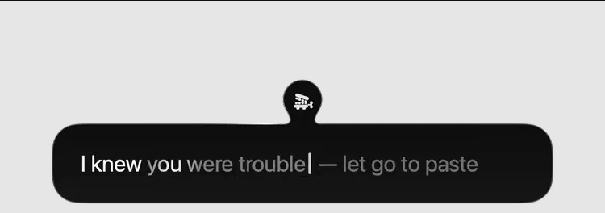

your voice,
where your
cursor is.
hold fn, talk, let go.
it’s pasted into the app you’re in.
hold this
to try it.
no microphone.
while you talk
the words make room.i was going
i was going to type
all of this.
i was going to type all of this. then i remembered i could just say it.
the little blob opens.
your words appear as you speak.
then, let go.
this is an editable field. the replay puts its sample here. yap does it in the app you’re already using.
fn fndouble-tap for hands free.
tap again to paste.
escchanged your mind? cancel.
fn + another key cancels too.
a blob on the edge.
that’s the app.
no app to switch to. hold ⌘ and drag the blob to another edge, or click it to talk.

nothing leaves your mac.
it uses apple’s on-device SpeechTranscriber. transcripts are kept for 30 days. recordings are off unless you turn them on. change either in settings.
read how it worksi wanted my
ram back.
i wrote yap to replace wispr flow, which sat on 1.3 gb of ram and about 5% cpu whether i was talking or not. yap sits on about 0.1 gb and only works while you talk.
not the most accurate. here’s the table.
| engine | error | wait | ram |
|---|---|---|---|
| parakeet v3 (mlx) | 7.4% | 0.5 s | 1.1 gb |
| wispr flow (cloud) | 7.4% | 0.6 s | 1.3 gb |
| apple (yap) | 8.6% | 0.9 s | 0.1 gb |
| whisper large-v3-turbo | 11.1% | 1.4 s | 0.9 gb |
nobody hand-checked these. each is scored against what the others agreed on. useful for comparing, not an exact accuracy. the benchmark notes.
it learns
your words.
yap reads names and odd words from the window you’re in. it hears “reddis”, sees “Redis”, and fixes it. after a few times, it learns the swap.
it never touches ordinary words, and doesn’t keep what it read. words you keep deleting, like “basically”, get dropped.
how much to tidy up
- light
- um, uh and stumbles.
- medium (default)
- also punctuation and grammar, a sentence at a time. keeps your words.
- heavy
- also drops what you take back and turns lists into bullets. “send it to john, no wait, sarah” becomes “send it to Sarah”.
give your
keyboard
a minute.
free. mac only. needs macos 26.
brew tap 0xdeafcafe/yap https://github.com/0xdeafcafe/yap
brew install --cask yapit’ll want the microphone to hear you and accessibility to see fn and press ⌘V. quit wispr flow first, or both will paste.
yap takes over fn while it’s running. your emoji picker setting comes back when you quit.
if you build apps
yap sends live dictation over ~/.config/yap/live.sock. rush uses it to show your words in its message box while you speak. only your user can connect.